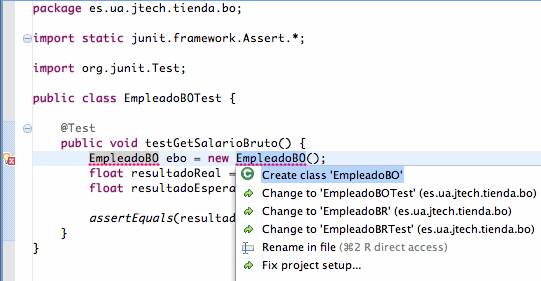

Casos de prueba: JUnit
En este tema veremos JUnit, una librería desarrollada para poder probar el funcionamiento de las clases y métodos que componen nuestra aplicación, y asegurarnos de que se comportan como deben ante distintas situaciones de entrada.
Introducción a JUnit
Cuando probamos un programa, lo ejecutamos con unos datos de entrada (casos de prueba) para verificar que el funcionamiento cumple los requisitos esperados. Definimos prueba unitaria como la prueba de uno de los módulos que componen un programa.
En los últimos años se han desarrollado un conjunto de herramientas que facilitan la elaboración de pruebas unitarias en diferentes lenguajes. Dicho conjunto se denomina XUnit. De entre dicho conjunto, JUnit es la herramienta utilizada para realizar pruebas unitarias en Java.
El concepto fundamental en estas herramientas es el caso de prueba (test case), y la suite de prueba (test suite). Los casos de prueba son clases o módulos que disponen de métodos para probar los métodos de una clase o módulo concreta/o. Así, para cada clase que quisiéramos probar definiríamos su correspondiente clase de caso de prueba. Mediante las suites podemos organizar los casos de prueba, de forma que cada suite agrupa los casos de prueba de módulos que están funcionalmente relacionados.
Las pruebas que se van construyendo se estructuran así en forma de árbol, de modo que las hojas son los casos de prueba, y podemos ejecutar cualquier subárbol (suite).
De esta forma, construimos programas que sirven para probar nuestros módulos, y que podremos ejecutar de forma automática. A medida que la aplicación vaya avanzando, se dispondrá de un conjunto importante de casos de prueba, que servirá para hacer pruebas de regresión. Eso es importante, puesto que cuando cambiamos un módulo que ya ha sido probado, el cambio puede haber afectado a otros módulos, y sería necesario volver a ejecutar las pruebas para verificar que todo sigue funcionando.
Aplicando lo anterior a Java, JUnit es un conjunto de clases opensource que nos permiten probar nuestras aplicaciones Java. Podemos encontrar información actualizada de JUnit en http://www.junit.org
Encontraremos una distribución de JUnit, en la que habrá un fichero JAR, junit.jar, que contendrá las clases que deberemos tener en el CLASSPATH a la hora de implementar y ejecutar los casos de prueba.
Integración de JUnit en Eclipse
Eclipse incorpora opciones para poder trabajar con JUnit desde él. Antes de nada, debemos tener nuestro proyecto Java ya creado, o bien crearlo nuevo. Una vez hecho esto, deberemos añadir la librería de JUnit al build path del proyecto. La forma más rápida de hacer esto es pulsar con el botón derecho sobre nuestro proyecto y seleccionar Java Build Path > Add Libraries ..., de forma que nos aparecerá una ventana en la que podremos elegir la librería a añadir, siendo una de ellas JUnit:
Una vez seleccionada la librería JUnit, nos aparecerá otra ventana en la que podremos elegir tanto JUnit 3 como JUnit 4.
La principal diferencia entre ambas versiones es que en JUnit 3 los casos de prueba se crean mediante herencia, y sobrescribiendo una serie de métodos, mientras que en la nueva versión se hace mediante anotaciones, por lo que es necesario utilizar Java 5 o posterior. También sería posible tener ambas librerías en un mismo proyecto.
Vamos a centrarnos en el estudio de JUnit 4. Una vez añadida la librería, ya podemos crear los casos de prueba de nuestro proyecto proyecto. Si creamos un caso de prueba sin tener todavía añadida la librería JUnit, veremos que Eclipse nos preguntará si queremos añadirla y si respondemos afirmativamente la librería se añadirá automáticamente.
Un ejemplo sencillo
Supongamos que tenemos una clase EmpleadoBR con las reglas de negocio aplicables a los empleados de una tienda. En esta clase encontramos los siguientes métodos con sus respectivas especificaciones:
| Método | Especificación |
|---|---|
| float calculaSalarioBruto(
TipoEmpleado tipo, float ventasMes, float horasExtra) |
El salario base será 1000 euros si el empleado es de tipo TipoEmpleado.vendedor, y de 1500 euros si es de tipo TipoVendedor.encargado. A esta cantidad se le sumará una prima de 100 euros si ventasMes es mayor o igual que 1000 euros, y de 200 euros si fuese al menos de 1500 euros. Por último, cada hora extra se pagará a 20 euros. Si tipo es null, o ventasMes o horasExtra toman valores negativos el método lanzará una excepción de tipo BRException. |
| float calculaSalarioNeto(
float salarioBruto) |
Si el salario bruto es menor de 1000 euros, no se aplicará ninguna retención. Para salarios a partir de 1000 euros, y menores de 1500 euros se les aplicará un 16%, y a los salarios a partir de 1500 euros se les aplicará un 18%. El método nos devolverá salarioBruto * (1-retencion), o BRExcepcion si el salario es menor que cero. |
A partir de dichas especificaciones podemos diseñar un conjunto de casos de prueba siguiendo métodos como el método de pruebas de particiones, también conocido como caja negra. Si en lugar de contar con la especificación, contásemos con el código del método a probar también podríamos diseñar a partir de él un conjunto de casos de prueba utilizando otro tipo de métodos (en este caso se podría utilizar el método de caja blanca). No vamos a entrar en el estudio de estos métodos de prueba, sino que nos centraremos en el estudio de la herramienta JUnit. Por lo tanto, supondremos que después de aplicar un método de pruebas hemos obtenido los siguientes casos de prueba:
| Método a probar | Entrada | Salida esperada |
|---|---|---|
| calculaSalarioNeto | 2000 | 1640 |
| calculaSalarioNeto | 1500 | 1230 |
| calculaSalarioNeto | 1499.99 | 1259.9916 |
| calculaSalarioNeto | 1250 | 1050 |
| calculaSalarioNeto | 1000 | 840 |
| calculaSalarioNeto | 999.99 | 999.99 |
| calculaSalarioNeto | 500 | 500 |
| calculaSalarioNeto | 0 | 0 |
| calculaSalarioNeto | -1 | BRException |
| calculaSalarioBruto | vendedor, 2000 euros, 8h | 1360 |
| calculaSalarioBruto | vendedor, 1500 euros, 3h | 1260 |
| calculaSalarioBruto | vendedor, 1499.99 euros, 0h | 1100 |
| calculaSalarioBruto | encargado, 1250 euros, 8h | 1760 |
| calculaSalarioBruto | encargado, 1000 euros, 0h | 1600 |
| calculaSalarioBruto | encargado, 999.99 euros, 3h | 1560 |
| calculaSalarioBruto | encargado, 500 euros, 0h | 1500 |
| calculaSalarioBruto | encargado, 0 euros, 8h | 1660 |
| calculaSalarioBruto | vendedor, -1 euros, 8h | BRException |
| calculaSalarioBruto | vendedor, 1500 euros, -1h | BRException |
| calculaSalarioBruto | null, 1500 euros, 8h | BRException |
A continuación veremos como implementar estas pruebas utilizando JUnit 4.
Implementación de los casos de prueba
Vamos a utilizar JUnit para probar los métodos anteriores. Para ello deberemos crear una serie de clases en las que implementaremos las pruebas diseñadas. Esta implementación consistirá básicamente en invocar el método que está siendo probado pasándole los parámetros de entrada establecidos para cada caso de prueba, y comprobar si la salida real coincide con la salida esperada. Esto en principio lo podríamos hacer sin necesidad de utilizar JUnit, pero el utilizar esta herramienta nos va a ser de gran utilidad ya que nos proporciona un framework que nos obligará a implementar las pruebas en un formato estándar que podrá ser reutilizable y entendible por cualquiera que conozca la librería. El aplicar este framework también nos ayudará a tener una batería de pruebas ordenada, que pueda ser ejecutada fácilmente y que nos muestre los resultados de forma clara mediante una interfaz gráfica que proporciona la herramienta. Esto nos ayudará a realizar pruebas de regresión, es decir, ejecutar la misma batería de pruebas en varios momentos del desarollo, para así asegurarnos de que lo que nos había funcionado antes siga funcionando bien.
Para implementar las pruebas en JUnit utilizaremos dos elementos básicos:
- Por un lado, marcaremos con la anotación @Test los métodos que queramos que JUnit ejecute. Estos serán los métodos en los que implementemos nuestras pruebas. En estos métodos llamaremos al método probado y comprobaremos si el resultado obtenido es igual al esperado.
- Para comprobar si el resultado obtenido coincide con el esperado utilizaremos los métodos assert de la librería JUnit. Estos son una serie de métodos estáticos de la clase Assert (para simplificar el código podríamos hacer un import estático de dicha clase), todos ellos con el prefijo assert-. Existen multitud de variantes de estos métodos, según el tipo de datos que estemos comprobando (assertTrue, assertFalse, assertEquals, assertNull, etc). Las llamadas a estos métodos servirán para que JUnit sepa qué pruebas han tenido éxito y cuáles no.
Cuando ejecutemos nuestras pruebas con JUnit, se nos mostrará un informe con el número de pruebas éxitosas y fallidas, y un detalle desglosado por casos de prueba. Para los casos de prueba que hayan fallado, nos indicará además el valor que se ha obtenido y el que se esperaba.
Además de estos elementos básicos anteriores, a la hora de implementar las pruebas con JUnit deberemos seguir una serie de buenas prácticas que se detallan a continuación:
- La clase de pruebas se llamará igual que la clase a probar, pero con el sufijo -Test. Por ejemplo, si queremos probar la clase MiClase, la clase de pruebas se llamará MiClaseTest.
- La clase de pruebas se ubicará en el mismo paquete en el que estaba la clase probada. Si MiClase está en el paquete es.ua.jtech.lja, MiClaseTest pertenecerá e ese mismo paquete. De esta forma nos aseguramos tener acceso a todos los miembros de tipo protegido y paquete de la clase a probar.
- Mezclar clases reales de la aplicación con clases que sólo nos servirán para realizar las pruebas durante el desarrollo no es nada recomendable, pero no queremos renunciar a poner la clase de pruebas en el mismo paquete que la clase probada. Para solucionar este problema lo que se hará es crear las clases de prueba en un directorio de fuentes diferente. Si los fuentes de la aplicación se encuentran normalmente en un directorio llamado src, los fuentes de pruebas irían en un directorio llamado test.
- Los métodos de prueba (los que están anotados con @Test), tendrán como nombre el mismo nombre que el del método probado, pero con prefijo test-. Por ejemplo, para probar miMetodo tendríamos un método de prueba llamado testMiMetodo.
- Aunque dentro de un método de prueba podemos poner tantos assert como queramos, es recomendable crear un método de prueba diferente por cada caso de prueba que tengamos. Por ejemplo, si para miMetodo hemos diseñado tres casos de prueba, podríamos tener tres métodos de prueba distintos: testMiMetodo1, testMiMetodo2, y testMiMetodo3. De esta forma, cuando se presenten los resultados de las pruebas podremos ver exactamente qué caso de prueba es el que ha fallado.
Vamos a ver ahora cómo hacer esto desde Eclipse. Lo primero que deberemos hacer es crear un nuevo directorio de fuentes en nuestro proyecto, para tener separados en él los fuentes de prueba. Por ejemplo, podemos llamar a este directorio test. Una vez hayamos hecho esto, pincharemos con el botón derecho sobre la clase que queramos probar y seleccionaremos New > JUnit Test Case. Nos aparecerá un asitente para crear nuestro caso de prueba JUnit, en el que muchos campos estarán ya rellenos:
Como podemos observar, tanto el nombre de la nueva clase como el paquete ya lo indica correctamente, pero deberemos cambiar el directorio de fuentes a test en lugar de src, y la libería utilizada será JUnit 4 en lugar de JUnit 3. Una vez hemos introducido esta información pulsaremos sobre Next. Veremos una pantalla en la que podremos seleccionar los métodos que queremos probar:
Una vez seleccionados los métodos que nos interesen podremos pulsar el botón Finish y nos creará el esqueleto de nuestra clase JUnit. En él deberemos rellenar los métodos de pruebas, o crear nuevos métodos si lo consideramos oportuno. Por ejemplo, la implementación de alguno de los casos de prueba diseñados anteriormente podría quedar como se muestra a continuación:
public class EmpleadoBRTest {
@Test
public void testCalculaSalarioBruto1() {
float resultadoReal = EmpleadoBR.calculaSalarioBruto(
TipoEmpleado.vendedor, 2000.0f, 8.0f);
float resultadoEsperado = 1360.0f;
assertEquals(resultadoEsperado, resultadoReal, 0.01);
}
@Test
public void testCalculaSalarioBruto2() {
float resultadoReal = EmpleadoBR.calculaSalarioBruto(
TipoEmpleado.vendedor, 1500.0f, 3.0f);
float resultadoEsperado = 1260.0f;
assertEquals(resultadoEsperado, resultadoReal, 0.01);
}
@Test
public void testCalculaSalarioNeto1() {
float resultadoReal = EmpleadoBR.calculaSalarioNeto(2000.0f);
float resultadoEsperado = 1640.0f;
assertEquals(resultadoEsperado, resultadoReal, 0.01);
}
@Test
public void testCalculaSalarioNeto2() {
float resultadoReal = EmpleadoBR.calculaSalarioNeto(1500.0f);
float resultadoEsperado = 1230.0f;
assertEquals(resultadoEsperado, resultadoReal, 0.01);
}
}
En general la construcción de pruebas sigue siempre estos mismos patrones: llamar al método probado y comprobar si la salida real coincide con la esperada utilizando los métodos assert.
Pruebas con lanzamiento de excepciones
En algunos casos de prueba, lo que se espera como salida no es que el método nos devuelva un determinado valor, sino que se produzca una excepción. Para comprobar con JUnit que la excepción se ha lanzado podemos optar por dos métodos diferentes. El más sencillo de ellos es indicar la excepción esperada en la anotación @Test:
@Test(expected=BRException.class)
public void testCalculaSalarioNeto9() {
EmpleadoBR.calculaSalarioNeto(-1.0f);
}
Otra posibilidad es utilizar el método fail de JUnit, que nos permite indicar que hay un fallo en la prueba. En este caso lo que haríamos sería llamar al método probado dentro de un bloque try-catch que capture la excepción esperada. Si al llamar al método no saltase la excepción, llamaríamos a fail para indicar que no se ha comportado como debería según su especificación.
@Test
public void testCalculaSalarioNeto9() {
try {
EmpleadoBR.calculaSalarioNeto(-1.0f);
fail("Se esperaba excepcion BRException");
} catch(BRException e) {}
}
Cuando el método que estemos probando pueda lanzar una excepción de tipo checked que debamos capturar de forma obligatoria en JUnit, también podemos utilizar fail dentro del bloque catch para notificar del fallo en caso de que se lance la excepción de forma no esperada:
public void testCalculaSalarioBruto1() {
float resultadoReal;
try {
resultadoReal = EmpleadoBR.calculaSalarioBruto(
TipoEmpleado.vendedor, 2000.0f, 8.0f);
float resultadoEsperado = 1360.0f;
assertEquals(resultadoEsperado, resultadoReal, 0.01);
} catch (BRException e) {
fail("Lanzada excepcion no esperada BRException");
}
}
Si el método probado lanzase una excepción de tipo unchecked no esperada, y no la capturásemos, JUnit en lugar de marcarlo como fallo lo marcará como error.
Ejecución de pruebas
Cuando tengamos definida la clase de prueba que queramos ejecutar, y la clase a probar, pulsamos con el botón derecho sobre la clase de prueba y selecionamos Run As > JUnit test. Nos aparecerá la ventana de JUnit en Eclipse con los resultados:
Arriba tendremos una barra roja o verde (según si ha habido fallos o no), y el número de pruebas fallidas, y de errores producidos durante la ejecución de las pruebas. En la parte central vemos la jerarquía de todas las pruebas ejecutadas, con un icono que nos indicará si ha tenido éxito o no, y si seleccionamos alguna de las fallidas abajo vemos los detalles del error (resultado obtenido, resultado esperado, y línea de código en la que se ha producido). Haciendo doble click en los errores iremos a la línea de código que los provocó. Se puede relanzar un test pulsando Ctrl + F11, o pulsando sobre el botón "play".
Ejecutar pruebas fuera de Eclipse
Para ejecutar pruebas por sí solas, debemos utilizar un ejecutor de pruebas (test runner). JUnit proporciona algunos de ellos, como junit.textui.TestRunner (para mostrar los resultados en modo texto), o junit.swingui.TestRunner (para mostrar los resultados gráficamente). Para ejecutarlos podemos incluir el jar junit.jar en el CLASSPATH al ejecutar:
java -cp ./junit.jar junit.swingui.TestRunner
Nos aparecería una ventana donde indicamos el nombre del caso de prueba que queremos ejecutar (o lo elegimos de una lista), y luego pulsando Run nos mostrará los resultados. La barra verde aparece si las pruebas han ido bien, y si no aparecerá en rojo. En la pestaña Failures podemos ver qué pruebas han fallado, y en Test Hierarchy podemos ver todas las pruebas que se han realizado, y los resultados para cada una. En el cuadro inferior nos aparecen los errores que se han producido en las pruebas erróneas.
Para ejecutar el TestRunner u otro ejecutor de pruebas, podemos también definirnos un método main en nuestra clase de prueba que lance el ejecutor, en nuestro caso:
public static void main (String[] args)
{
String[] nombresTest = {EmpleadoBRTest.class.getName()};
junit.swingui.TestRunner.main(nombresTest);
}
Vemos que al main del TestRunner se le pueden pasar como parámetros los nombres de las clases de prueba que queremos probar.
Desarrollo guiado por pruebas
Anteriormente se ha comentado que puede resultar recomendable implementar las pruebas antes que el método a probar. Existe una metodología de desarrollo denominada desarrollo guiado por pruebas (Test Driven Development, TDD) que se basa precisamente en implementar primero las pruebas y a partir de ellas implementar las funcionalidades de nuestra aplicación. Esta metodología consiste en los siguientes pasos:
- Seleccionar una funcionalidad de la aplicación a implementar.
- Diseñar e implementar una serie de casos de prueba a partir de la especificación de dicha funcionalidad. Evidentemente, en un principio la prueba ni siquiera compilará, ya que no existirá ni la clase ni el método a probar. Con Eclipse podemos hacer que genere automáticamente los componentes que necesitamos. Podemos ver que al utilizar una clase que no existe en Eclipse nos mostrará un icono de error en la línea correspondiente. Pinchando sobre dicho icono podremos hacer que se cree automáticamente la clase necesaria: 
- Una vez compile, se deberá ejecutar la prueba para comprobar que falla. De esta forma nos aseguramos de que realmente las pruebas están comprobando algo.
- El siguiente paso consiste en hacer el mínimo código necesario para que se pasen los tests. Aquí se deberá implementar el código más sencillo posible, y no hacer nada que no sea necesario para pasar las pruebas, aunque nosotros veamos que pudiese ser conveniente. Si creemos que se debería añadir algo, la forma de proceder sería anotar la mejora, para más adelante añadirla a la especificación, y cuando las pruebas reflejen esa mejora se implementará, pero no antes. De esta forma nos aseguramos de que siempre todas las funcionalidades implementadas están siendo verificadas por alguna de las pruebas.
- Una vez las pruebas funcionan, refactorizaremos el código escrito para conseguir un código más limpio (por ejemplo para eliminar segmentos de código duplicados). Volviendo a ejecutar las pruebas escritas podremos comprobar que la refactorización no ha hecho que nada deje de funcionar.
- Por último, si todavía nos quedan funcionalidades por implementar, repetiremos el proceso seleccionando una nueva funcionalidad.
Estas pruebas también se denominan pruebas red-green-refactor, debido a que primero deberemos comprobar que las pruebas fallan (luz roja), y de esta forma tener confianza en que nuestras pruebas están comprobando algo. Después implementamos el código para conseguir que el test funcione (luz verde), y por último refactorizamos el código.
Una de las ventajas de esta tecnología es que se consigue un código de gran calidad, en el que vamos a tener una gran confianza, ya que va a estar probado desde el primer momento. Además, nos asegura que las pruebas verifican todos los requerimientos de la aplicación. Al eliminar los errores de forma temprana, con esta metodología se evita tener que depurar un código más complejo.
Fixtures
Es probable que en varias de las pruebas implementadas se utilicen los mismos datos de entrada o de salida esperada, o que se requieran los mismos recursos. Para evitar tener código repetido en los diferentes métodos de test, podemos utilizar los llamados fixtures, que son elementos fijos que se crearán antes de ejecutar cada prueba. Para inicializar estos elementos fijos utilizaremos métodos marcados con las siguientes anotaciones:
| Anotación | Comportamiento |
|---|---|
| @Before | El método se ejecutará antes de cada prueba (antes de ejecutar cada uno de los métodos marcados con @Test). Será útil para inicializar los datos de entrada y de salida esperada que se vayan a utilizar en las pruebas. |
| @After | Se ejecuta después de cada test. Nos servirá para liberar recursos que se hubiesen inicializado en el método marcado con @Before. |
| @BeforeClass | Se ejecuta una sola vez antes de ejecutar todos los tests de la clase. Se utilizarán para crear estructuras de datos y componentes que vayan a ser necesarios para todas las pruebas. Los métodos marcados con esta anotación deben ser estáticos. |
| @AfterClass | Se ejecuta una única vez después de todos los tests de la clase. Nos servirá para liberar los recursos inicializados en el método marcado con @BeforeClass, y al igual que este último, sólo se puede aplicar a métodos estáticos. |
Imaginemos que tenemos una clase ColaMensajes a la que se pueden añadir una serie de mensajes de texto hasta llegar a un límite de capacidad. Cuando se rebase dicho límite, el mensaje más antiguo será eliminado. Para probar los métodos de esta clase en muchos casos nos interesará tener como entrada una cola llena. Para evitar repetir el código en el que se inicializa dicha cola, podemos hacer uso de fixtures:
public class ColaMensajesTest {
ColaMensajes colaLlena3;
@Before
public void setUp() throws Exception {
colaLlena3 = new ColaMensajes(3);
colaLlena3.insertarMensaje("1");
colaLlena3.insertarMensaje("2");
colaLlena3.insertarMensaje("3");
}
@Test
public void testInsertarMensaje() {
List<String> listaEsperada = new ArrayList<String>();
listaEsperada.add("2");
listaEsperada.add("3");
listaEsperada.add("4");
colaLlena3.insertarMensaje("4");
assertEquals(listaEsperada, colaLlena3.obtenerMensajes());
}
@Test
public void testNumMensajes() {
assertEquals(3, colaLlena3.numMensajes());
}
@Test
public void testExtraerMensaje() {
assertEquals("1", colaLlena3.extraerMensaje());
}
}
Objetos mock
Hasta ahora hemos visto ejemplos muy sencillos, en los que el método a probar recibe todos los datos de entrada necesarios mediante parámetros. Sin embargo, en una aplicación real en la mayoría de los casos el comportamiento de los métodos no dependerá únicamente de los parámetros de entrada, sino que también dependerá de otros datos, como por ejemplo datos almacenados en una base de datos, o datos a los que se accede a través de la red. Estos datos también son una entrada del método de probar, pues el resultado del mismo depende de ellos, por lo que en nuestras pruebas de JUnit deberíamos ser capaces de fijarlos para poder predecir de forma determinista el resultado del método a probar.
Sin embargo, dado que muchas veces dependen de factores externos al código de nuestra aplicación, es imposible establecer su valor en el código de JUnit. Por ejemplo, imaginemos que el método calculaSalarioNeto visto como ejemplo anteriormente, dado que los tramos de las retenciones varían cada año, en lugar de utilizar unos valores fijos se conecta a una aplicación de la Agencia Tributaria a través de Internet para obtener los tramos actuales. En ese caso el resultado que devolverá dependerá de la información almacenada en un servidor remoto que no controlamos. Es más, imaginemos que la especificación del método nos dice que nos devolverá BRException si no puede conectar al servidor para obtener la información. Deberíamos implementar dicho caso de prueba, pero en principio nos es imposible especificar como entrada en JUnit que se produzca un fallo en la red. Tampoco nos vale cortar la red manualmente, ya que nos interesa tener una batería de pruebas automatizadas.
La solución para este problema es utilizar objetos mock. Éstos son objetos "impostores" que implementaremos nosotros y que se harán pasar por componentes utilizados en nuestra aplicación, permitiéndonos establecer su comportamiento según nuestros intereses. Por ejemplo, supongamos que el método calculaSalarioNeto está accediendo al servidor remoto mediante un objeto ProxyAeat que es quien se encarga de conectarse al servidor remoto y obtener la información necesaria de él. Podríamos crearnos un objeto MockProxyAeat, que se hiciese pasar por el objeto original, pero que nos permitiese establecer el resultado que queremos que nos devuelva, e incluso si queremos que produzca alguna excepción. A continuación mostramos el código que tendría el método a probar dentro de la clase EmpleadoBR:
public float calculaSalarioNeto(float salarioBruto) {
float retencion = 0.0f;
if(salarioBruto < 0) {
throw new BRException("El salario bruto debe ser positivo");
}
ProxyAeat proxy = getProxyAeat();
List<TramoRetencion> tramos;
try {
tramos = proxy.getTramosRetencion();
} catch (IOException e) {
throw new BRException(
"Error al conectar al servidor de la AEAT", e);
}
for(TramoRetencion tr: tramos) {
if(salarioBruto < tr.getLimiteSalario()) {
retencion = tr.getRetencion();
break;
}
}
return salarioBruto * (1 - retencion);
}
ProxyAeat getProxyAeat() {
ProxyAeat proxy = new ProxyAeat();
return proxy;
}
Ahora necesitamos crear un objeto MockProxyAeat que pueda hacerse pasar por el objeto original. Para ello haremos que MockProxyAeat herede de ProxyAeat, sobrescribiendo los métodos para los que queramos cambiar el comportamiento, y añadiendo los constructores y métodos auxiliares que necesitemos. Debido al polimorfismo, este nuevo objeto podrá utilizarse en todos los lugares en los que se utilizaba el objeto original:
public class MockProxyAeat extends ProxyAeat {
boolean lanzarExcepcion;
public MockProxyAeat(boolean lanzarExcepcion) {
this.lanzarExcepcion = lanzarExcepcion;
}
@Override
public List<TramoRetencion> getTramosRetencion()
throws IOException {
if(lanzarExcepcion) {
throw new IOException("Error al conectar al servidor");
}
List<TramoRetencion> tramos = new ArrayList<TramoRetencion>();
tramos.add(new TramoRetencion(1000.0f, 0.0f));
tramos.add(new TramoRetencion(1500.0f, 0.16f));
tramos.add(new TramoRetencion(Float.POSITIVE_INFINITY, 0.18f));
return tramos;
}
}
Ahora debemos conseguir que dentro del método a probar se utilice el objeto mock en lugar del auténtico, pero deberíamos hacerlo sin modificar ni el método ni la clase a probar. Podremos hacer esto de forma sencilla si hemos utilizado métodos de factoría para tener acceso a estos componentes. Podemos crear una subclase de EmpleadoBR en la que se sobrescriba el método de factoría que se encarga de obtener el objeto ProxyAeat, para que en su lugar nos instancie el mock:
class TestableEmpleadoBR extends EmpleadoBR {
ProxyAeat proxy;
public void setProxyAeat(ProxyAeat proxy) {
this.proxy = proxy;
}
@Override
ProxyAeat getProxyAeat() {
return proxy;
}
}
Si nuestra clase a probar no tuviese un método de factoría, siempre podríamos refactorizarla para extraer la creación del componente que queramos sustituir a un método independiente y así permitir introducir el mock de forma limpia.
El código de JUnit para probar nuestro método podría quedar como se muestra a continuación:
TestableEmpleadoBR ebr;
TestableEmpleadoBR ebrFail;
@Before
public void setUpClass() {
ebr = new TestableEmpleadoBR();
ebr.setProxyAeat(new MockProxyAeat(false));
ebrFail = new TestableEmpleadoBR();
ebrFail.setProxyAeat(new MockProxyAeat(true));
}
@Test
public void testCalculaSalarioNeto1() {
float resultadoReal = ebr.calculaSalarioNeto(2000.0f);
float resultadoEsperado = 1640.0f;
assertEquals(resultadoEsperado, resultadoReal, 0.01);
}
@Test(expected=BRException.class)
public void testCalculaSalarioNeto10() {
ebrFail.calculaSalarioNeto(1000.0f);
}
Podremos utilizar mocks para cualquier otro tipo de componente del que dependa nuestro método. Por ejemplo, si en nuestro método se utiliza un generador de números aleatorios, y el comportamiento varía según el número obtenido, podríamos sustituir dicho generador por un mock, para así poder predecir en nuestro código el resultado que dará. De especial interés son las pruebas de métodos que dependen de los datos almacenados en una base de datos, ya que son los que nos encontraremos con más frecuencia, y en los que los mocks también nos pueden resultar de ayuda. Por este motivo, pasamos a tratarlos de forma especial a continuación.
Pruebas con base de datos
Normalmente en nuestra aplicación tendremos una serie de objetos que se encargan del acceso a datos (Data Access Objects, DAO). El resto de componentes de la aplicación, como pueden ser nuestros componentes de negocio, utilizarán los DAO para acceder a los datos. Por lo tanto, dichos componentes de negocio podrían ser probados sustituyendo los DAO por objetos mock en los que podamos establecer de forma sencilla el estado de la base de datos que queremos simular en las pruebas.
Supongamos que tenemos una clase EmpleadoBO que contiene un método getSalarioBruto(int idEmpleado). Dicho método toma como entrada el identificador de un empleado en la base de datos, y nos devolverá su salario bruto. En caso de que el empleado no exista en la base de datos, lanzará una excepción de tipo BOException. Lo mismo ocurrirá si no puede acceder a la base de datos. La implementación será como se muestra a continuación:
public class EmpleadoBO {
public float getSalarioBruto(int idEmpleado) throws BOException {
IEmpleadoDAO edao = getEmpleadoDAO();
EmpleadoBR ebr = new EmpleadoBR();
try {
EmpleadoTO empleado = edao.getEmpleado(idEmpleado);
if(empleado==null) {
throw new BOException("El usuario no existe");
}
return ebr.calculaSalarioBruto(empleado.getTipo(),
empleado.getVentasMes(), empleado.getHorasExtra());
} catch (DAOException e) {
throw new BOException("Error al obtener el salario bruto",
e);
} catch(BRException e) {
throw new BOException("Error al calcular el salario bruto",
e);
}
}
IEmpleadoDAO getEmpleadoDAO() {
IEmpleadoDAO edao = new JDBCEmpleadoDAO();
return edao;
}
}
En este caso será sencillo crear un mock de nuestro DAO de empleados y sustuir el DAO original por el impostor. Nos será de ayuda el haber definido una interfaz para el DAO (IEmpleadoDAO), ya que de esta forma implementaremos el mock como otra versión del DAO que implemente la misma interfaz que la original:
public class MockEmpleadoDAO implements IEmpleadoDAO {
List<EmpleadoTO> listaEmpleados;
boolean falloConexion;
public MockEmpleadoDAO(boolean falloConexion) {
listaEmpleados = new ArrayList<EmpleadoTO>();
this.falloConexion = falloConexion;
}
private void compruebaConexion() throws DAOException {
if(falloConexion) {
throw new DAOException("Fallo al conectar a la BD");
}
}
public void addEmpleado(EmpleadoTO empleado)
throws DAOException {
this.compruebaConexion();
if(this.getEmpleado(empleado.getId()) == null) {
listaEmpleados.add(empleado);
} else {
throw new DAOException("El empleado la existe en la BD");
}
}
public void delEmpleado(int idEmpleado) throws DAOException {
this.compruebaConexion();
EmpleadoTO empleado = this.getEmpleado(idEmpleado);
if(empleado != null) {
listaEmpleados.remove(empleado);
} else {
throw new DAOException("El empleado no existe en la BD");
}
}
public EmpleadoTO getEmpleado(int idEmpleado)
throws DAOException {
this.compruebaConexion();
for(EmpleadoTO empleado: listaEmpleados) {
if(empleado.getId() == idEmpleado) {
return empleado;
}
}
return null;
}
public List<EmpleadoTO> getEmpleados() throws DAOException {
this.compruebaConexion();
return listaEmpleados;
}
}
De esta forma podríamos implementar algunas de nuestras pruebas en JUnit como sigue a continuación:
public class EmpleadoBOTest {
TestableEmpleadoBO ebo;
@Before
public void setUp() {
EmpleadoDAO edao = new MockEmpleadoDAO(false);
try {
edao.addEmpleado(new EmpleadoTO(1,"12345678X",
"Paco Garcia", TipoEmpleado.vendedor, 1250, 8));
edao.addEmpleado(new EmpleadoTO(2,"65645342B",
"Maria Gomez", TipoEmpleado.encargado, 1600, 2));
edao.addEmpleado(new EmpleadoTO(3,"45452343F",
"Manolo Gutierrez", TipoEmpleado.vendedor, 800, 0));
} catch (DAOException e) {
e.printStackTrace();
}
ebo = new TestableEmpleadoBO();
ebo.setEmpleadoDAO(edao);
}
@Test
public void testGetSalarioBruto() {
try {
float resultadoReal = ebo.getSalarioBruto(3);
float resultadoEsperado = 1000.0f;
assertEquals(resultadoEsperado, resultadoReal, 0.01);
} catch (BOException e) {
fail("Lanzada excepcion no esperada BOException");
}
}
}
class TestableEmpleadoBO extends EmpleadoBO {
EmpleadoDAO edao;
public void setEmpleadoDAO(EmpleadoDAO edao) {
this.edao = edao;
}
@Override
EmpleadoDAO getEmpleadoDAO() {
return edao;
}
}
Destacamos aquí que los fixtures han sido de gran ayuda para crear los objetos mock necesarios.
Sin embargo, si lo que nos interesa es probar nuestro DAO, ya no tiene sentido utilizar mocks, ya que estos estarían sustituyendo a las propias clases a probar. En estos casos será necesario probar la base de datos real. Para ello tenemos herramientas especializadas como DBUnit, que nos permiten establecer de forma sencilla el estado en el que queremos dejar la base de datos antes de cada prueba.
Otra opción sería utilizar los propios fixtures de JUnit para establecer el estado de la base de datos antes de cada prueba. Podríamos utilizar el método marcado con @Before para vaciar la tabla que estemos probando e insertar en ella los datos de prueba.
Suites de pruebas
A medida que vamos acumulando métodos de prueba, nos podría interesar organizarlos o agruparlos de determinada forma. Mediante las suites podemos asignar métodos de prueba a grupos, y así poder ejecutar todas nuestras pruebas (o un grupo de ellas) de forma conjunta.
Para crear la suite con JUnit 4 simplemente deberemos crear una nueva clase Java, y anotarla como se muestra a continuación:
import org.junit.*;
import org.junit.runner.*;
import org.junit.runners.Suite;
import org.junit.runners.Suite.SuiteClasses;
@RunWith(Suite.class)
@SuiteClasses( { EmpleadoBRTest.class, EmpleadoBOTest.class })
public class MiSuite {}
La anotación @RunWith simplemente hace referencia a la clase de JUnit 4 que se encarga de ejecutar las suites. Por otro lado, la anotación SuiteClasses sirve para poner entre llaves, y separadas por comas, todas las clases de prueba que queramos incorporar a la suite. De esta forma, la clase, como se ve, puede quedar vacía perfectamente. Luego el compilador, al procesar las anotaciones, ya se encarga de construir la suite correspondiente con las clases de prueba. Utilizando este método, todas las clases de prueba que agrupemos en la suite deberán estar implementadas en JUnit 4.
Para ejecutar la suite, la ejecutamos (Run As) como un JUnit Test. Aparecerá la ventana de JUnit con los tests realizados, agrupados por las clases a las que pertenece cada uno.
Para crear suites de pruebas en Eclipse, podemos ir a File > New > JUnit Test Suite. Ahí le indicamos el nombre de la suite, y las clases de prueba que queremos incluir en ella. Sin embargo, esto sólo funciona cuando utilizamos JUnit 3. Existe una pequeña "laguna" aún en la adaptación de las suites a JUnit 4, que Eclipse no ha cubierto aún. Sin embargo, existe una forma de hacer que las pruebas hechas en JUnit 4 funcionen en una suite creada por Eclipse.
Deberemos modificar el método suite creado automáticamente, añadiendo una nueva clase, que compatibiliza las pruebas de JUnit 4 para que funcionen en entornos de ejecución de JUnit 3 (como el runner que lanza el método suite). Esta clase se llama JUnit4TestAdapter, y bastaría con sustituir las dos líneas anteriores en negrita por estas dos:
public static Test suite() {
...
suite.addTest(
new junit.framework.JUnit4TestAdapter(EmpleadoBOTest.class));
suite.addTest(
new junit.framework.JUnit4TestAdapter(EmpleadoBRTest.class));
...
}
Esta forma de crear la suite tiene la ventaja de que nos permitirá agrupar pruebas de JUnit 3 y 4.